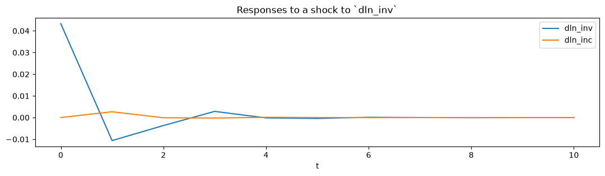

VARMAX models#
This is a brief introduction notebook to VARMAX models in statsmodels. The VARMAX model is generically specified as:
where \(y_t\) is a \(\mathrm{k_endog} \times 1\) vector.
[1]:
%matplotlib inline
[2]:
import matplotlib.pyplot as plt
import numpy as np
import pandas as pd
import statsmodels.api as sm
[3]:
import shutil
import requests
def download_file(url):
local_filename = url.split("/")[-1]
with requests.get(url, stream=True) as r:
with open(local_filename, "wb") as f:
shutil.copyfileobj(r.raw, f)
return local_filename
filename = download_file("https://www.stata-press.com/data/r12/lutkepohl2.dta")
dta = pd.read_stata(filename)
dta.index = dta.qtr
dta.index.freq = dta.index.inferred_freq
endog = dta.loc["1960-04-01":"1978-10-01", ["dln_inv", "dln_inc", "dln_consump"]]
Model specification#
The VARMAX class in statsmodels allows estimation of VAR, VMA, and VARMA models (through the order argument), optionally with a constant term (via the trend argument). Exogenous regressors may also be included (as usual in statsmodels, by the exog argument), and in this way a time trend may be added. Finally, the class allows measurement error (via the measurement_error argument) and allows specifying either a diagonal or unstructured innovation covariance matrix (via the
error_cov_type argument).
Example 1: VAR#
Below is a simple VARX(2) model in two endogenous variables and an exogenous series, but no constant term. Notice that we needed to allow for more iterations than the default (which is maxiter=50) in order for the likelihood estimation to converge. This is not unusual in VAR models which have to estimate a large number of parameters, often on a relatively small number of time series: this model, for example, estimates 27 parameters off of 75 observations of 3 variables.
[4]:
exog = endog["dln_consump"]
mod = sm.tsa.VARMAX(endog[["dln_inv", "dln_inc"]], order=(2, 0), trend="n", exog=exog)
res = mod.fit(maxiter=1000, disp=False)
print(res.summary())
Statespace Model Results
==================================================================================
Dep. Variable: ['dln_inv', 'dln_inc'] No. Observations: 75
Model: VARX(2) Log Likelihood 361.032
Date: Wed, 24 Jun 2026 AIC -696.063
Time: 14:47:50 BIC -665.936
Sample: 04-01-1960 HQIC -684.033
- 10-01-1978
Covariance Type: opg
===================================================================================
Ljung-Box (L1) (Q): 0.03, 10.27 Jarque-Bera (JB): 10.97, 2.38
Prob(Q): 0.86, 0.00 Prob(JB): 0.00, 0.30
Heteroskedasticity (H): 0.45, 0.40 Skew: 0.15, -0.38
Prob(H) (two-sided): 0.05, 0.02 Kurtosis: 4.85, 3.44
Results for equation dln_inv
====================================================================================
coef std err z P>|z| [0.025 0.975]
------------------------------------------------------------------------------------
L1.dln_inv -0.2454 0.092 -2.654 0.008 -0.427 -0.064
L1.dln_inc 0.2859 0.448 0.638 0.524 -0.593 1.165
L2.dln_inv -0.1629 0.155 -1.052 0.293 -0.466 0.141
L2.dln_inc 0.0893 0.422 0.212 0.832 -0.737 0.916
beta.dln_consump 0.9504 0.639 1.488 0.137 -0.302 2.203
Results for equation dln_inc
====================================================================================
coef std err z P>|z| [0.025 0.975]
------------------------------------------------------------------------------------
L1.dln_inv 0.0618 0.036 1.715 0.086 -0.009 0.132
L1.dln_inc 0.0851 0.107 0.793 0.428 -0.125 0.296
L2.dln_inv 0.0077 0.033 0.235 0.814 -0.057 0.072
L2.dln_inc 0.0358 0.134 0.267 0.790 -0.227 0.299
beta.dln_consump 0.7722 0.112 6.885 0.000 0.552 0.992
Error covariance matrix
============================================================================================
coef std err z P>|z| [0.025 0.975]
--------------------------------------------------------------------------------------------
sqrt.var.dln_inv 0.0433 0.004 12.310 0.000 0.036 0.050
sqrt.cov.dln_inv.dln_inc 8.489e-06 0.002 0.004 0.997 -0.004 0.004
sqrt.var.dln_inc 0.0109 0.001 11.202 0.000 0.009 0.013
============================================================================================
Warnings:
[1] Covariance matrix calculated using the outer product of gradients (complex-step).
From the estimated VAR model, we can plot the impulse response functions of the endogenous variables.
[5]:
ax = res.impulse_responses(10, orthogonalized=True, impulse=[1, 0]).plot(
figsize=(13, 3)
)
ax.set(xlabel="t", title="Responses to a shock to `dln_inv`");

Example 2: VMA#
A vector moving average model can also be formulated. Below we show a VMA(2) on the same data, but where the innovations to the process are uncorrelated. In this example we leave out the exogenous regressor but now include the constant term.
[6]:
mod = sm.tsa.VARMAX(
endog[["dln_inv", "dln_inc"]], order=(0, 2), error_cov_type="diagonal"
)
res = mod.fit(maxiter=1000, disp=False)
print(res.summary())
Statespace Model Results
==================================================================================
Dep. Variable: ['dln_inv', 'dln_inc'] No. Observations: 75
Model: VMA(2) Log Likelihood 353.880
+ intercept AIC -683.761
Date: Wed, 24 Jun 2026 BIC -655.951
Time: 14:48:06 HQIC -672.656
Sample: 04-01-1960
- 10-01-1978
Covariance Type: opg
===================================================================================
Ljung-Box (L1) (Q): 0.00, 0.04 Jarque-Bera (JB): 13.44, 14.28
Prob(Q): 1.00, 0.84 Prob(JB): 0.00, 0.00
Heteroskedasticity (H): 0.44, 0.81 Skew: 0.07, -0.49
Prob(H) (two-sided): 0.04, 0.59 Kurtosis: 5.07, 4.89
Results for equation dln_inv
=================================================================================
coef std err z P>|z| [0.025 0.975]
---------------------------------------------------------------------------------
intercept 0.0182 0.005 3.788 0.000 0.009 0.028
L1.e(dln_inv) -0.2488 0.106 -2.342 0.019 -0.457 -0.041
L1.e(dln_inc) 0.4801 0.628 0.765 0.444 -0.750 1.711
L2.e(dln_inv) 0.0238 0.151 0.157 0.875 -0.273 0.320
L2.e(dln_inc) 0.2147 0.475 0.452 0.651 -0.716 1.145
Results for equation dln_inc
=================================================================================
coef std err z P>|z| [0.025 0.975]
---------------------------------------------------------------------------------
intercept 0.0207 0.002 13.094 0.000 0.018 0.024
L1.e(dln_inv) 0.0467 0.042 1.120 0.263 -0.035 0.128
L1.e(dln_inc) -0.0692 0.141 -0.490 0.624 -0.346 0.208
L2.e(dln_inv) 0.0188 0.043 0.442 0.659 -0.065 0.102
L2.e(dln_inc) 0.1155 0.154 0.749 0.454 -0.187 0.418
Error covariance matrix
==================================================================================
coef std err z P>|z| [0.025 0.975]
----------------------------------------------------------------------------------
sigma2.dln_inv 0.0020 0.000 7.322 0.000 0.001 0.003
sigma2.dln_inc 0.0001 2.32e-05 5.847 0.000 9.02e-05 0.000
==================================================================================
Warnings:
[1] Covariance matrix calculated using the outer product of gradients (complex-step).
Caution: VARMA(p,q) specifications#
Although the model allows estimating VARMA(p,q) specifications, these models are not identified without additional restrictions on the representation matrices, which are not built-in. For this reason, it is recommended that the user proceed with error (and indeed a warning is issued when these models are specified). Nonetheless, they may in some circumstances provide useful information.
[7]:
mod = sm.tsa.VARMAX(endog[["dln_inv", "dln_inc"]], order=(1, 1))
res = mod.fit(maxiter=1000, disp=False)
print(res.summary())
/tmp/ipykernel_5579/242493548.py:1: EstimationWarning: Estimation of VARMA(p,q) models is not generically robust, due especially to identification issues.
mod = sm.tsa.VARMAX(endog[["dln_inv", "dln_inc"]], order=(1, 1))
Statespace Model Results
==================================================================================
Dep. Variable: ['dln_inv', 'dln_inc'] No. Observations: 75
Model: VARMA(1,1) Log Likelihood 354.288
+ intercept AIC -682.576
Date: Wed, 24 Jun 2026 BIC -652.448
Time: 14:48:07 HQIC -670.546
Sample: 04-01-1960
- 10-01-1978
Covariance Type: opg
===================================================================================
Ljung-Box (L1) (Q): 0.00, 0.06 Jarque-Bera (JB): 11.14, 14.18
Prob(Q): 0.95, 0.81 Prob(JB): 0.00, 0.00
Heteroskedasticity (H): 0.43, 0.91 Skew: 0.01, -0.46
Prob(H) (two-sided): 0.04, 0.81 Kurtosis: 4.89, 4.92
Results for equation dln_inv
=================================================================================
coef std err z P>|z| [0.025 0.975]
---------------------------------------------------------------------------------
intercept 0.0105 0.065 0.162 0.871 -0.116 0.137
L1.dln_inv -0.0050 0.696 -0.007 0.994 -1.369 1.359
L1.dln_inc 0.3798 2.731 0.139 0.889 -4.972 5.732
L1.e(dln_inv) -0.2483 0.706 -0.352 0.725 -1.633 1.136
L1.e(dln_inc) 0.1253 2.980 0.042 0.966 -5.716 5.967
Results for equation dln_inc
=================================================================================
coef std err z P>|z| [0.025 0.975]
---------------------------------------------------------------------------------
intercept 0.0165 0.027 0.607 0.544 -0.037 0.070
L1.dln_inv -0.0337 0.278 -0.121 0.904 -0.579 0.511
L1.dln_inc 0.2358 1.102 0.214 0.831 -1.925 2.396
L1.e(dln_inv) 0.0892 0.285 0.313 0.754 -0.469 0.647
L1.e(dln_inc) -0.2374 1.137 -0.209 0.835 -2.466 1.991
Error covariance matrix
============================================================================================
coef std err z P>|z| [0.025 0.975]
--------------------------------------------------------------------------------------------
sqrt.var.dln_inv 0.0449 0.003 14.527 0.000 0.039 0.051
sqrt.cov.dln_inv.dln_inc 0.0017 0.003 0.651 0.515 -0.003 0.007
sqrt.var.dln_inc 0.0116 0.001 11.722 0.000 0.010 0.013
============================================================================================
Warnings:
[1] Covariance matrix calculated using the outer product of gradients (complex-step).